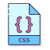
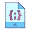

Sobre Mim
Contato
Meus Projetos
JOÃO PEDRO ZANG GOMES
Estudante de programação full stack com objetivos de aprender e aprimorar novos conhecimentos direcionados à prática e mercado de trabalho.
TECNOLOGIAS:
 PROJETOS:
REDES SOCIAIS:


CONTATO
SOBRE MIM
Olá! Meu nome é João Pedro Zang Gomes, tenho 21 anos e sou nascido em Porto Alegre - RS, Brasil. Sou uma pessoa que está disposta a aprender, amo tudo relacionado a tecnologia e ao mundo nerd.
HISTÓRICO EDUCACIONAL
Escola de Ensino Médio São Luis Guanella
- Formado em 2017
Escola Técnica Cristo Redentor
- Técnico em Química concluído em 2018
Labenu
- Web Full Stack Integral em andamento
CERTIFICADOS
Jogos clássicos parte 1: Iniciando no Javascript com Pong.
- Alura - Fevereiro 2022 - Carga horária: 6 horas
Jogos clássicos parte 2: laços e listas com Javascript.
- Alura - Fevereiro 2022 - Carga horária: 4 horas
HTML5 e CSS3 parte 1: A primeira página da Web.
- Alura - Fevereiro 2022 - Carga horária: 8 horas
HTML5 e CSS3 parte 2: Posicionamento, listas e navegação.
- Alura - Fevereiro 2022 - Carga horária: 8 horas
SOFT SKILLS
Adaptação: Desde muito cedo sempre gostei de diversificar meus hobbies e meus ciclos sociais, isso continuou para minha vida profissional, onde me vejo como facilmente adaptável a novas ideias, soluções e tecnologias.
Honestidade: Desenvolvi confiança em ser honesto, trabalhei por um bom período na área de testes e análises químicas, onde a honestidade relacionada a o trabalho era de extrema importância.
Comunicação: Me considero bem comunicativo, sempre tentando demonstrar minhas ideias e também ouvir as dos outros.
IDIOMAS
Inglês: Compreende Bem, Fala Bem, Lê Bem, Escreve Razoavelmente.
Espanhol: Compreende Razoavelmente, Fala Pouco, Lê Razoavelmente, Escreve Pouco.